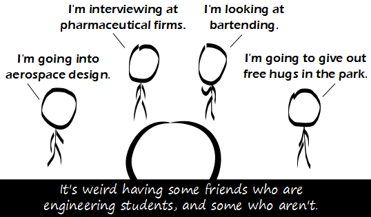

Comic JK 834
When I Feel Like It
⇤
<
?
>
⇥

⇤
<
?
>
⇥
Forum
.
RSS
.
Digg
.
Facebook
.
Reddit
.
Twitter
.
Stumbleupon
Enter your thoughts on number 834 here. Please, no spamming, trolling, phreaking or inducing educational inflation. Am I the only Engineer who wants to hug people in the park? >I do too but there are just no good parks near me. It's weird having some friends. >that depends who your friends are, and where you have them... >Would it make more sense to have _no_ friends or _all_ friends instead? >>no :( It's weird having some friends who are sociology majors. "I'm going to help poor people for wages I could have made without a degree at all." >Or, you know, "I'm going to go to school to become educated, rather than to prep for a career that I can complain about for the next 40 years" Friends? What are they?? > Things people used to have before the glories of the Internet. I find this amusing partly because I'm in the same situation. Although, for me most of my friends are either Engineering or Computing. Then there's the ones that are neither and all weird comparatively. I think it would be more weird having only engineering friends. > +1 I know the last guy :O >Hugs are awesome. Your mother thinks I'm her only friend, and I'm only using her for my crippling emotional trauma. >+1 >+9000 your lulz are over 9000 I support friends of all fields of study, as long as they know LaTeX >When giving out free hugs, don't forget to use LaTeX. >is that latex as in the computing sense or the fashion sense ? >>I think he said LaTeX >>> Latex is way more fun than LaTeX. >>>> I disagree. >>>>> You may be alone there. >>>>>> s/he (who am I kidding of course he is a he) is not. >>>>>>> "He" has clearly never tried latex (nudge, nudge) if he thinks LaTeX is more fun.